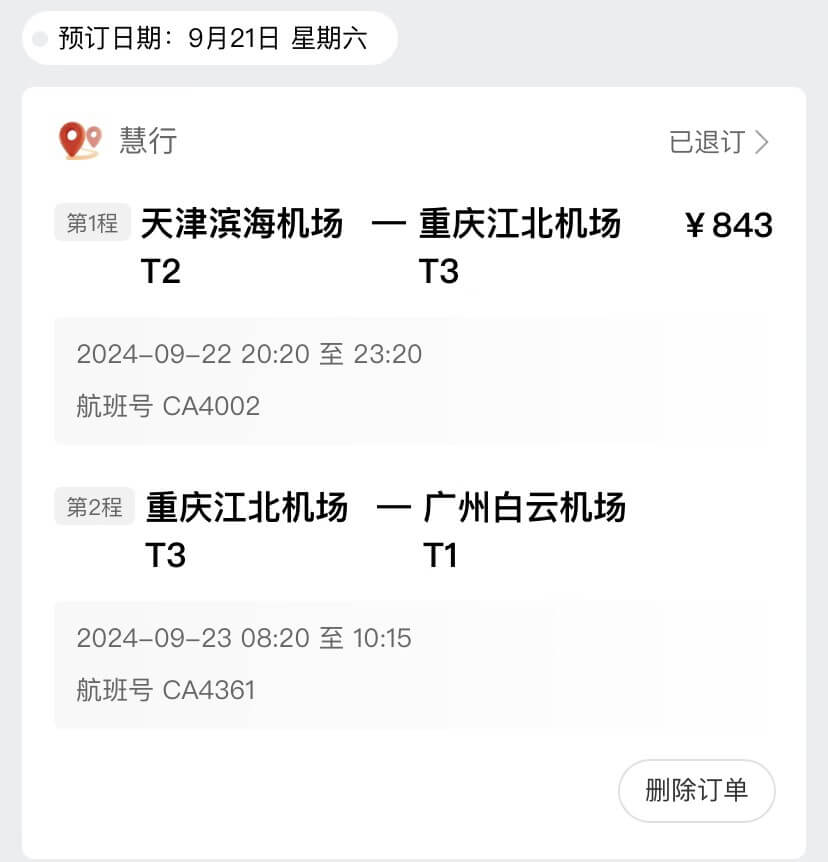
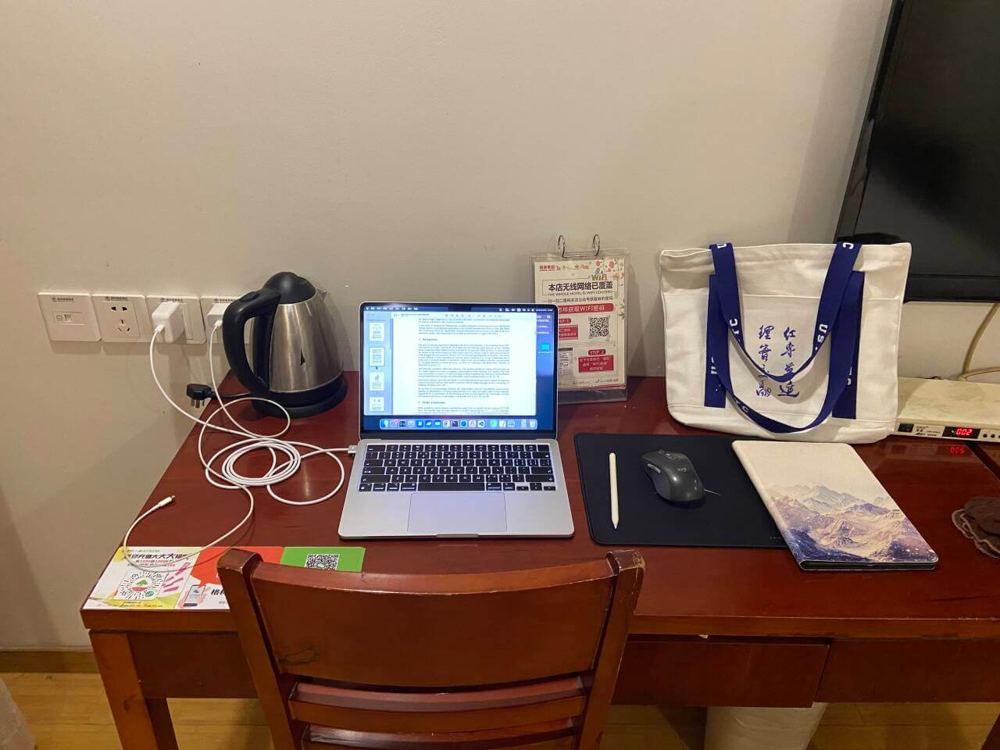
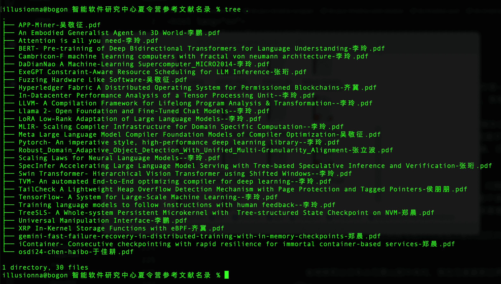
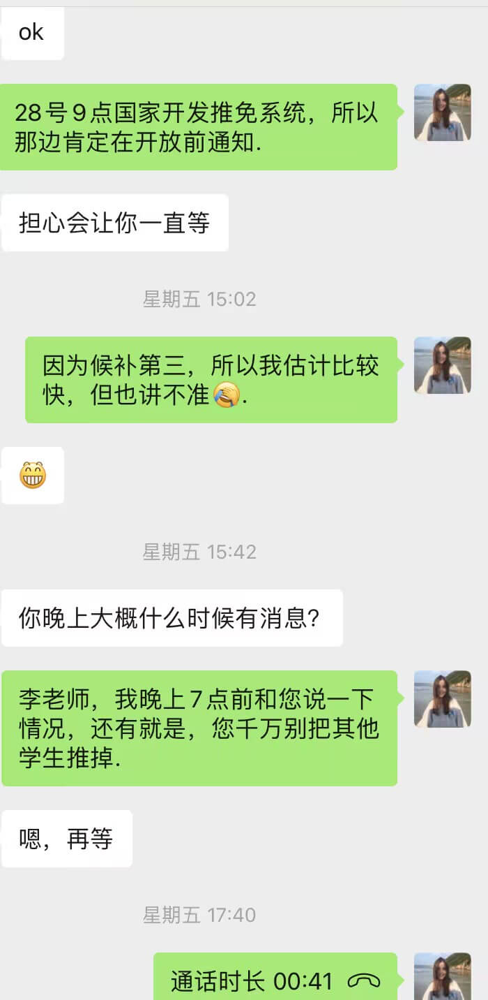
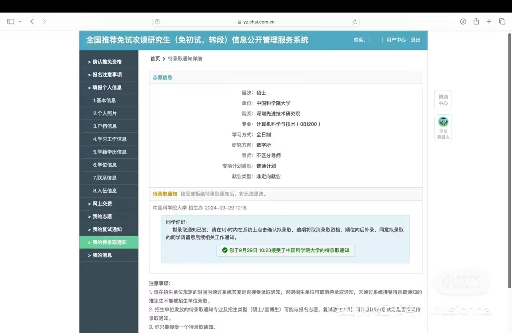

西北工业大学计算机预推免考核
夏令营的导师把我推荐给课题组大导主任，无幻灯片介绍，让做口头介绍，然后一堆拷打，测重 CV 底层、数据分析底层，问我一个表格中的异常数据怎么清洗处理（要最最最底层的算法），最后大导说我的答案不是他们想要的，说从我身上看不到计算机的编程能力，也看不到算法的数学基础，让我等通知。
西工大计算机貌似是弱 com，需要和导师达成双选。
当前状态：0 offer
西安交通大学计算机学院物联网课题组夏令营考核
9:30 ~ 11:30 开腾讯会议进行面试，背景面，3 分钟幻灯片介绍 + 2 分钟组委会提问，主要问有哪些 offer，是否最终来西安交通大学。
18:18 收到短信通知，我面试通过，获得夏令营优营，让我抓紧时间联系导师，进行预推免申请。
当前状态：0 offer
联系西交计导师
最想联系罗敏楠女士，因为发现她本科也是数学，后来转到计算机，而且做的方向比较感兴趣。但因为中秋节放假，赶上周末，邮件根本不回复。加之，来来回回发了 5 份邮件，杳无音讯，无奈之下，我紧急联系上给我发优营短信通知的安教授。
当前状态：0 offer
中科大与苏州实验室工程博士联培预推免考核
14:00 开始，严格要求双机位腾讯会议，5 分钟幻灯片介绍 + 一篇推迟退休的英文阅读并翻译（相比于中科大夏令营的英语，简单太多）+ 组委会提问。
- 你学过哪些物理、化学、材料的课程
- 你大学有密立根油滴实验吗
- 你了解哪些大模型
考核结束后，我立刻向组委会道歉，“把名额留个有需要的同学吧，别让我通过面试”，虽然我此时还没 offer，但我拒绝工程博士，而且偏纳米方向。
当前状态：0 offer
华南理工大学计算机学院预推免通知
10:29 收到研招办短信通知，要求我今天 14:00 前回复是否去广州参加 09-23 ~ 09-24 的复试，并在网页系统上确认或放弃。
网页系统优先给 985 显示“确认”或“放弃”的按钮，再到 211 学校，实际系统做得很烂，我联系招生办，她最终先放我入围，再让我晚上去系统确认。
最后 09-26 得知华工预推免放不少人进去，实际上是怕自己被鸽穿，让很多学生去填充鱼塘做候补，而且据说要组委会考核通过，再拿着成绩去找导师达成“双选”。
当前状态：0 offer
联系中科院计算机学院导师
深晚，一位计算所导师说自己没有名额了，把我推荐给计算机学院的何老师，何老师在 ICIP 中文信息处理实验室招生，当晚给我打电话问我是不是申请他的预推免。
我们聊了很久，何老师没明问我有哪些 offer 或者怎么样怎么样，他只问我来不来预推免，我也装糊涂说来，最后他将我推荐入围。
当前状态：0 offer
西交计老师承诺优先保障录取我
我阅读了安导师的文章，并和他进行交流，他似乎很高兴，说最后来了西安，可以一起参与投稿，决定要我，此时给了我口头 offer，但我之前被中科大导师搞得有点自闭，不是很相信。
09-19 号华工给我发短信通知，而我今天清晨才买机票，这是因为我在等武大、中山、川大、中南、杭高院、计算所、软件所、计算机学院的通知，我怕时间全撞到一块，这会让我疲惫于南方北方来回奔波。
上午 09:41 我果不其然收到中科院计算机学院入营通知（要求去实地），晚上 23:34 中南大学电子信息学院 AI 方向发来入围邮件（线上腾讯会议）。
当前状态：0 offer，口头 1 份 offer
华工计算机 v.s. 中科院软件所
中午，我从北京赶到天津，在地铁口，我收到一份邮件，说我入围软件所了，让我加招生秘书微信，她说是李玲老师把我推荐的。我本身打算乘地铁去滨海机场，而这份邮件，让我最后选择在附近定了一间格林豪泰。
招生秘书姓纪，说 09-24 10:30 前可以参加面试。我问她名额有几个，她回我“李玲老师还有名额”，我将信将疑，她说“如果来不了就比较可惜了”。我说实话，我真被老师的拉扯给唬到了，我问她要准备什么，她说一份报名表和自我介绍 PPT 以及文献阅读 PPT。
我想了想，决定信她一次，于是放弃华工，赶忙前往北京，抓紧时间做幻灯片。机票原价 843 元，退款到账 314 元，简直亏麻了。
当前状态：0 offer，口头 1 份 offer
中科大导师放我鸽子
11:47 中科大导师给我发来微信，我预感到这一刻了，被鸽后我没难过，我难过的是后面几天发现他背着我悄悄招生。
上午是中南大学电子信息学院腾讯会议面试，要求先英语自我介绍，然后一位女老师问我“why choose the school of electronic information of central south university?”，最后我需要演示幻灯片介绍个人情况。
中午我退了中关村的房，在玉泉路那边再开房。
下午是四川大学计算机学院的腾讯会议面试，先让我阅读一段关于 PCA 主成分降纬的文献，再让我翻译，然后组委会依次随机抽取三道题让我作答两道，分别是：
- 操作系统体系结构，忘光了，没作答
- 哈夫曼编码适用什么特征的文本，我举了输入法的例子
- http 是哪一层协议，超文本传输协议，我随口一答传输层，事后我才想起来，每次在浏览器手动输入 http 和 https 网址，这不是妥妥应用层嘛，乐
然后组委会问我除了四川大学还有什么学校，问我川大有没有联系导师（此时发觉原来川大可能也是弱 com）。差不多快结束时，一位男老师突然说，原来你是数学的啊，接着我从屏幕看见组委会都一脸惊讶。我心想，你们怎么这么敷衍....
川大一结束，我立刻撰写软件所阅读文献的幻灯片。30 篇文献中一眼看到 Attention is all you need，因为时间紧迫，就做它了。

20:29 上海交通大学 AI Lab 联培给我打来电话，说有博士名额，我拒绝了。今晚熬了夜，09-24 2:30 我把幻灯片发给了招生秘书纪老师，3:00 才上床睡觉。
当前状态：0 offer，口头 1 份 offer
中科院软件所和西安交通计算机考核
不知道睡了多久，要坐公交和地铁从石景山到中关村，软件所在五号楼，我登记后去了等候室，先来了一位同学，然后又来了一位同学，今天就我们三个人面试。

我和他俩打招呼，让后我们聊了起来，外向的同学说他是清华的，我心里一惊，然后内向的同学问外向的哪个学院，说自动化。之后那个内向的同学一边拿出电脑一边说，我也是清华的。我当时心里在想，好了，我是给两位爷去陪跑了。
他俩问我是哪里的，我说末流 985 大专，外向的哥们立刻安慰我说，应该是等额录取，虽然我知道哥们在骗我，但我好开心。我在等候徘徊之时，一位保洁阿姨热心地和我打招呼，她是山东人，她儿子在天工大厦工作，所以陪过来了，阿姨夸赞我，让我放心，说我很自信，一定没问题。
他俩先面试，我最后面，流程是幻灯片介绍自己，再幻灯片介绍阅读文献，最后组委会（英文）提问。
- Do you plan to further your study or find a job in the future? 我说就业，因为现在大环境工作相当恶劣，而且我的家庭更需要我去就业。事后一位绿群群友说，这种问题必须回答读博，否则就被刷掉。
- Do your parents support you to go to graduate university? 我说是的，他们非常支持我。
- 你的论文承担什么工作？
- 我看你申请表里写着参加过中科院夏令营，除此之外你参加了什么？
- 你和西安交通大学冲突了吗？
- 你数学专业的，为什么想转软件方向？我说数学实在太难了，而且毕业即失业，李玲老师当时听我这么说捂嘴笑了，我不知道是逗乐组委会，还是被刷了。
下午 14:35 纪老师微信通知我被淘汰了，事后我追踪此事，她们应该只招一个人。放弃华南理工计算机，结果和俩个清华哥们竞争一个名额，感觉自己有点被坑了。不过后来，我微信列表多了一位清华的朋友。
下午回到酒店，真得好累，而且感觉要发烧了，整个人没劲，躺在床上立刻就睡着了。一觉自然醒来，看了手机，西安交通大学计算机居然正在面试，我立刻大脑充血，人精神起来，慌忙打开电脑进入腾讯会议。不过 2 分钟，果然轮到我了，差点就错过面试。
西交计的面试是让我演示幻灯片介绍，一个问题都没问，介绍完就让我退出腾讯会议。夏令营期间，西交计也是线上宣讲，然后营员自行找团队双选，今天预推免给我一种悄悄摸摸就结束了的感觉，生怕让人知道。
当前状态：0 offer，口头 1 份 offer
感冒发烧精神恍惚
或许是太焦虑了，或许是太累了，北京下了雨，温度也降低了，今天一天，我只想和床打交道。
上午有广州、北京的几个未接电话，下午有长沙的未接电话，或许这些电话里有着我入围哪哪高校预推免，但是我只想休息。
中午收到中南大学的预推免考核通过邮件，但据说中南大学 928 填系统是先到先得，所以也算不上 offer。
{kind=link}
晚上，烧有点退去，嗓子很难受，黏糊糊的，鼻涕流着不停。18:32 计算所许老师打来电话，说她的学生杨老师有一个直博名额，她们对我很感兴趣，说如果来，可以立刻安排，计算所是霸面。我感谢许老师，委婉拒绝了，她笑着说学生都喜欢硕士名额。
当前状态：0 offer，口头 1 份 offer
中科院计算机学院第一天考核
早上起床，烧应该全退了，但感冒没好，鼻腔里全是鼻涕，头昏沉沉的。计算机学院要求我们去航天中心医院体检，并且自费 268 元，我上午 9:00 过去的，差不多体检到 12:30，胸透、尿液、血压、彩超等等。
医生说我血压低，保重身体，中午在医院吃了免费的早餐，权当午餐。也遇到一位朋友，他说是 211 的，他大学我没听说过，他也是参加计算机学院预推免，他之前也被导师放鸽子了。
下午 13:15 左右，我步行到中科院，然后打印了纸质材料，去人文楼参加笔试考核。考核一小时，我看计算机学院给我发的邮件抄送人有 6 个华五（除了复旦），一个哈工大，一个国科大，还有 qq、163 域名的邮箱，可能还有大佬，微信群聊人数增增减减，最后稳定在 20 来人。
笔试三种类型：数学（35 分）、专业课（35 分）、英语（30 分）。负责人从 13:20 开考，14:20 收卷，笔试占 50% 的最终成绩。
- 英语第一题英译中，二选一，我选了一篇介绍神经网络的，第二题中译英，关于计算机体系结构的，第三题英文介绍你的突出项目。
- 专业课是关于大模型的，第一题讲解 BN 和 LN 的原理和应用场景，第二题，套着大模型的背景，计算贝叶斯先验概率，第三题说大模型经常会出现异常输出，设计一套算法去检测异常输出。
- 数学，第一题已知 $X\sim N(2,2),\ Y\sim N(-2,4)$，并且有 $\Pr(2X+Y\leqslant a)=\Pr(X\geqslant Y)$，求解 $a$ 的值。第二题二元函数 $f(x,y)=x^2+2y^2$ 偏导数最大方向导数是多少。第三题概率论交并集，已知 $\Pr(a)=\Pr(b)=\Pr(c)=1/3$ 且有 $a,b$ 同斥，$b,c$ 同斥，$c,a$ 独立，求 $\Pr(a\bigcap b\bigcup \overline{c})$ 的概率。第四题，不记得了。第五题，已知 $\textbf{A,B}$ 矩阵，求矩阵方程 $AXA+BXB=AXB+BXA+E$ 的解。第六题，求矩阵 $A^{300}$ 是多少，其中：
\(A=\left[\begin{matrix} 1 & 0 & 0 & 1/3 & 1/3 & 1/3 \\ 0 & 1 & 0 & 1/3 & 1/3 & 1/3 \\ 0 & 0 & 1 & 1/3 & 1/3 & 1/3 \\ 0 & 0 & 0 & 1/3 & 1/3 & 1/3 \\ 0 & 0 & 0 & 1/3 & 1/3 & 1/3 \\ 0 & 0 & 0 & 1/3 & 1/3 & 1/3 \\ \end{matrix}\right]\)
下午结束后，我步行回到紫园酒店，点了份米线外卖，晚上是中科大数据空间研究平台的面试，吴曼青院士课题组，要求幻灯片自我介绍，然后师姐提问，她差不多把我面了半小时，非常细致地问我竞赛、科研和项目。
- 未来你的研究规划是什么
- 实验室偏向网络安全，何向南老师做人工智能，你能接受安全方向吗
- 你做过什么人工智能的项目，是否做过微调
师姐说课题组不做科研，问我能不能接受做工程项目（我一听就知道课题组纯纯横向），她说经常外派，我问她去哪，她说保密，一般从合肥到北京，我问她毕业要求，她说博士大多留在课题组，硕士毕业主要看学生工程贡献量和项目态度。面试有两个组，一组 4 位同学，二组 3 位同学，我是一组最后一位。
深晚，计算所导师发来邮件，约我明天下午见面。中科大师姐微信给我说，我不合适，于是我问她什么情况，她说我是数学专业的，而且她们从 7 人中选了 3 人，但最终只有一个名额，所以还要进一步考核，剩下 2 人我估计就是候补了。
当前状态：0 offer，口头 1 份 offer
中科院计算机学院第二天考核
我以为每个同学差不多一刻钟面试时间，所以上午 10:00 左右就过去了，不过实际上考核时间很长，因为自从我过去后，发现好几位同学都平均在 25 ~ 30 分钟。我前面有 5 位同学，他们都是英语演讲幻灯片，然后在黑板上手写代码。他们有被问到正态分布的概率密度函数，还问到极限的数学定义，其中一位中南大学的哥们调侃到，这些老师为什么不去招数学的推免生。
一位国科大本科的大三学弟，湖州人，在我面前晃悠，我问他是下一个面试的同学么，他说是找老师签字。然后他和我聊了起来，快半个小时，他是学计算机的，对保研很好奇，问我推免是什么流程，我陪他唠嗑。
由于中午组委会老师要吃午饭休息，所以我被推迟到下午场第一位，要等到 13:20 开始。我早餐没吃，也不想吃午餐，于是干等着。
我把八份简历分发给每位老师，还剩一张，然后我中文演讲幻灯片，详细介绍自己。之后请组委会进行提问，一位女老师板着脸说“don't you know about the English introduction speech?”我说“I thought the 'English' in parentheses meant I could use 'Chinese'”。女老师说好啊，那我考你英语，我感觉她很傲慢，她英语问我为什么选择来国科大以及为什么读计算机，接着又英文问我介绍我的学校以及优缺点。
一位男老师很温柔，问我你能说说特征分解吗，于是我耐心跟他讲解，之后又问我那你了解奇异值分解吗，我说学过矩阵分析，但是印象里记得奇异值分解过程非常麻烦，确实记不清了，接着再问我酉空间的厄米特阵和盖尔圆的特征值，我再次和他讲解。
我的导师何老师也在场，他问我你做过什么大模型的工作吗，我说 2024-07-10 号我尝试复现 attention is all you need 这篇文章的代码，借鉴了一位台湾学者和斯坦福 NLP 课题组的代码，然后导师让我介绍这篇文章的创新点，在我说到位置编码的时候，导师说可以了，我知道你看懂这篇文章了。
又一位男老师问我，问我有一篇金融的文章，还是顶刊，我的科研工作具体过程是什么情况，然后问我高考多少分，我说想不起来了，好像 620 分，记不清。
那位女老师又开始压力我，她说“introduce your GitHub 380 stars project”，我说“it is a web server in local network or network address translation, transferring files between server and client. I design some algorithms like LRU to accelerate reading and writing on disk, multi-threaded breakpoint continuation to trace, async to I/O”，然后女老师双手叉拢放在胸前，问“so how do you do pressure testing”，我回答“the tool is individual usage, or very few people run code. So it is unnecessary to have a pressure testing”。
女老师立刻变了脸色，直接中文对我叫喊“任何项目都需要压力测试，你这是考虑不周全，哪有不测试的代码”。我再次申明立场，礼貌回答老师“它就是个人使用的，我自己平时也就两台电脑、一部手机、一个平板，而且就算是多人使用，吞吐量根本上不了量级，这种性质的工具个人使用为什么需要压力测试，难道我要拿着手机每秒请求电脑一万次嘛”。女老师脸色很不高兴，被我压力回去（其实有种顶嘴的感觉），她把我简历甩到桌子，对旁边的几位老师看看，然后她直接出门了。
接着一位男老师让我在黑板上用 C 语言写矩阵转置。顺便说个题外话，我的最右手边有一位青年的速记员，我嘴巴一动，他就噼里啪啦在电脑上打字。
我出教室门的时候，是 14:00，也就是面试了 40 分钟左右，在我踏出门槛的那一刻，一位老教授把我喊停了，他问我，是不是除了 NLP 以外不能接受其他研究方向，我说都接受。
我向着人文楼门口走出去，何老师从后面追了上来，他问我是不是一定来。我环顾四周，全是翠绿的树木，我对何老师说，我还有一个候补，现在在等，如果候补到了，我就不来北京这边，如果候补不到，我来北京。何老师说，你喜欢下棋，我回答，业余的，一个爱好。何老师解释，他招了四个人，把我放在第二位，第一位同学说可能来。何老师说，如果我被录取了，他希望我大四提前进组研究。我俩就站在人文楼门口的阶梯上聊了许久，最后我让何老师千万别推走第三位和第四位。
我和何老师道别，希望有缘再见，然后我走到放书包的户外椅子旁，立刻打开电脑，参加中科院软工中心的面试，正在进行的是一位西北工业大学的同学。
突然有人喊我，我回头看向远方，是那位老教授，他穿着红白相间的格子衫，他呼喊着问我方不方便，我立刻跑到他面前。老教授朝着我椅子旁的电脑说“你那边面试会不会受到影响”，我不好意思地想教授坦白“没事，还有一会儿才到我，是软件所的面试”。他又问“小伙子，推免很艰难吧”，我愣了一下，没听懂老教授意思。
老教授说，他本科北大数学系的，现在做 CV 方向，他说咱们数学系的人很讲究推理证明，但做计算机的讲究时间复杂度和空间复杂度，怎么加速进程，怎么减小消耗。老教授说，他太了解我跨保计算机的难度了，因为我现在做的事情，他以前就做过。他说我本科做的方向太广泛，容易迷失目标。
接着，他说他课题组的毕业生，很多去腾讯、阿里、字节继续做图像处理，年薪也在 40W+，高的在 60W+，他说听何教授说我希望去南方，觉得北京其实对个人发展也是相当好的。
我加了教授微信，他跟我说，如果我来，他可以当场承诺把其他联系他的学生拒绝掉。我连忙说别别别，教授说那就把我放在第一位，希望如果有通知立刻告知他。这算是一个铁 offer，虽然也是口头承诺。
老教授也和我聊了差不多一刻钟，我和他实话实话，讲句心里话，他和何老师一样，真是好老师，至少我觉得在说真话。和老教授道别后，我跑回电脑旁，西工大的同学已经演讲到最后了。
中科院软工中心要求每位同学一共 15 分钟，实际上面试我的时候也超时了，达到 25 分钟。
- 幻灯片自我介绍
- 英文介绍你的学院（school 而非 university）
- 详细问我项目
- 项目部署在哪
- 网上是不是有很多类似的项目
- 项目的特色在哪
- 本科遇到哪些问题和困难
- 说说你印象最深的文献大概讲了什么
- 那你说说你这篇 Transformer 文献解决了什么问题
面试结束，他们问我能不能接受南京实验室，研究生三年都在南京，毕业证都是国科大统一，如果能接受的话，后续再进行笔试机试考核，共 140 分钟。

结束后，又去计算所面见导师，不喜欢遂放弃。接着是中科院软件所天基国重实验室的面试，事后听绿群群友说横向很多，但工资挺高的。面试差不多 20 分钟。
- 幻灯片介绍
- 英文介绍你自己
- 讲讲 attention is all you need
- 介绍你的项目
- 你的分子动力学模型微调算力是谁提供的
- 你了解 Python 的 GIL 锁吗
- 有没有其他的 offer 或者联系了哪些导师
天基国重的李老师加我微信，说我考核通过，问我中不中意，我说不来软件所这边了。西安交通大学也给我发来填报志愿确认邮件，我回复确认。数字所也发来确认邮件，我也回复确认。想来想去，我最后给何老师和老教授拨通了微信电话，感谢他们肯定，但我不来北京了，何教授说没事，他已经联系上学生了，老教授也恭喜恭喜祝贺祝贺。928 前夕，我一次性收到 3 份 offer，
928 前夕，我一次性收到 3 份 offer，因为我父亲一直强调，不能只拿一个 offer 去填志愿，让我吸取夏令营的教训。我听取了长辈的建议，但心里总有一种说不出来的滋味。
当前状态：2 offer，拒绝 2 份 offer
全国研究生推免系统开放日
零点没过多久，我奇迹般地接到一个电话，自称是 MMLab 董老师的学生，他说有一个学硕名额，问我感不感兴趣。那夜，我已经劳累到极点，感冒很严重，人是崩溃边缘，最后给他回复说感兴趣。
上午国家推免系统 9:00 开放，我决定来中科院，最后给西安交通大学老师道歉。最终在系统填上了中科院和中科大。后来陆陆续续有很多老师主动打电话联系我，我统一推拒，我想我的保研之旅就到此结束了吧。
中科院数字所复试待录取
上午 9:30 左右，中南大学的数学系朋友胡先被录取，没过多久，我也收到复试通知，然后是拟录取通知，最后，我接受了中科院的待录取。
